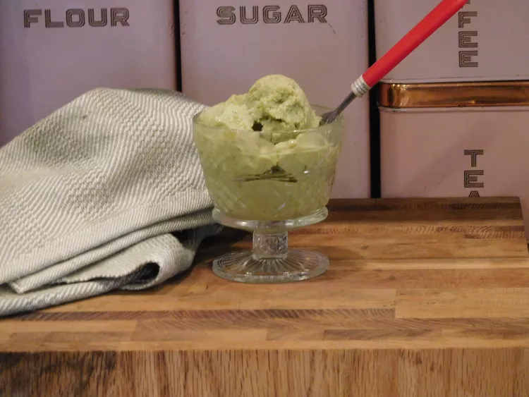

Avocado Ice-Cream

Description
Avocado ice cream is a creamy and refreshing treat that combines the
unique flavors of avocados with a luscious ice cream base. This recipe
will guide you through creating a smooth and delightful avocado ice cream
that is perfect for hot summer days or whenever you're craving a cool and
creamy dessert. The natural richness of avocados lends a velvety texture
to the ice cream, while a hint of lime juice adds a refreshing tang. Enjoy
this unique and delicious dessert that is sure to impress!
Ingredients
- 2 ripe avocados
- 1 cup heavy cream
- 1/2 cup whole milk
- 3/4 cup granulated sugar
- 1 tablespoon fresh lime juice
- 1 teaspoon vanilla extract
Steps
-
Peel and pit the avocados, then scoop out the flesh into a blender or
food processor.
-
Add the heavy cream, whole milk, granulated sugar, lime juice, and
vanilla extract to the blender or food processor with the avocado.
-
Blend the mixture on high speed until smooth and creamy, ensuring there
are no avocado chunks remaining.
-
Pour the avocado ice cream base into a lidded container and refrigerate
for at least 2 hours to chill thoroughly.
-
Once chilled, transfer the avocado ice cream base to an ice cream maker
and churn according to the manufacturer's instructions until it reaches
a soft-serve consistency.
-
If desired, you can enjoy the ice cream immediately as soft-serve or
transfer it to a lidded container and freeze for an additional 2-3 hours
for a firmer texture.
-
Serve the avocado ice cream in bowls or cones and garnish with your
favorite toppings, such as crushed nuts, chocolate shavings, or a
drizzle of honey.
-
Indulge in the creamy and refreshing goodness of homemade avocado ice
cream!